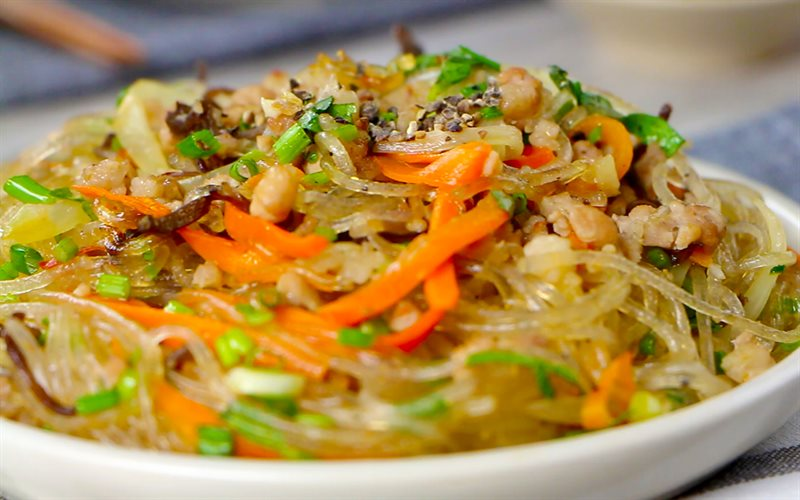

Miến Xào Thịt Băm
Miến xào thịt bằm là sự gợi ý hoàn hảo cho bữa sáng đơn giản và không có nhiều thời gian. Với 2 nguyên liệu chính là miến và thịt bằm, bạn có thể kết hợp với bất cứ loại rau củ nào có sẵn trong tủ lạnh nhà mình đấy. Món này sẽ rất thích hợp cho bữa ăn của những gia đình bận rộn nhưng vẫn không kém phần ngon miệng và dinh dưỡng.